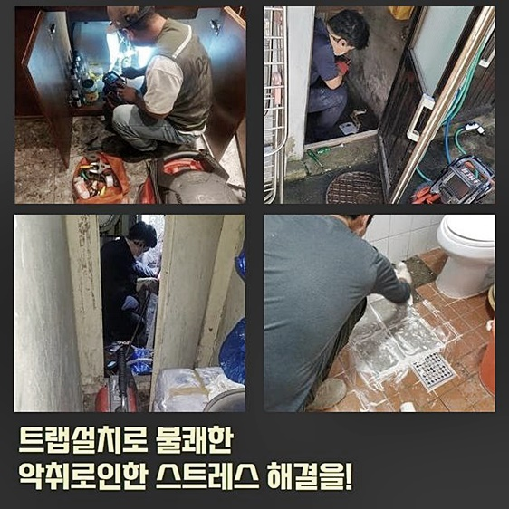
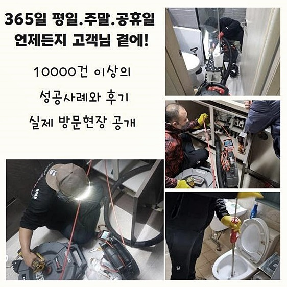
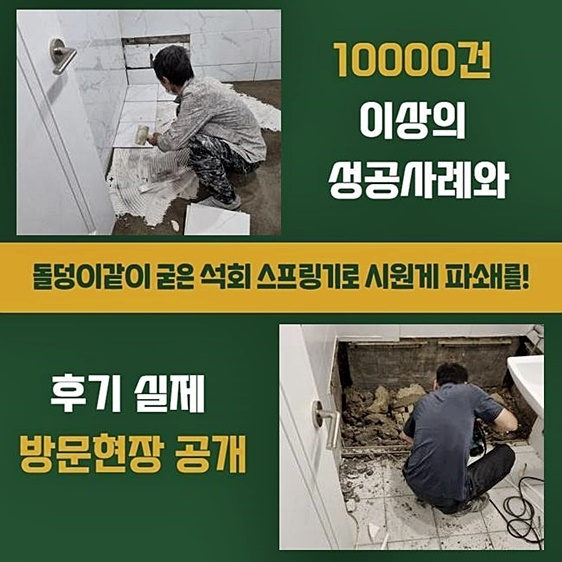
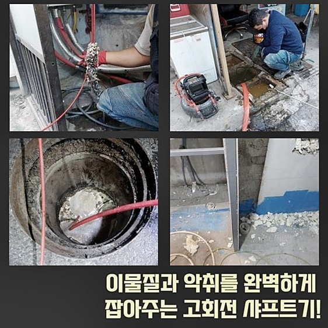
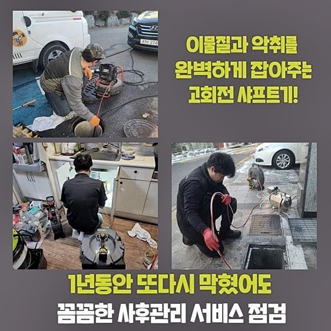
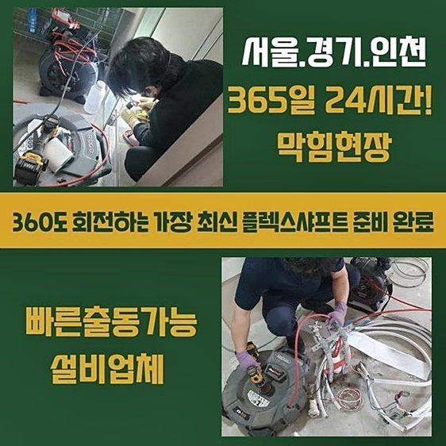
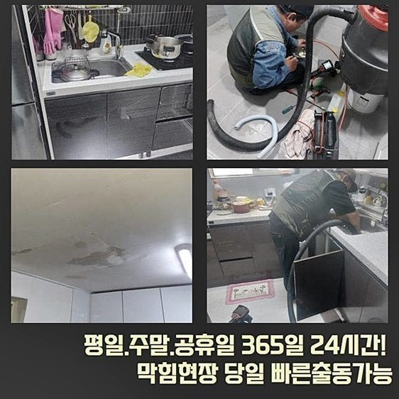

🏠 서초구 양재동변기역류 신원동 배관내시경카메라 통수전문
용인 원동 변기막힘 전문 시공 후기

📋 작업 개요
- 위치: 용인 원동, 원동, 용인
- 서비스 유형: 변기막힘, 배관막힘, 역류해결, 뚫는업체, 배관청소, 고압세척, 설비공사, 배관보수
- 작업 일시: 2024. 8. 7. 10:36
- 업체명: 하수구수사대 (010-5615-2118)
🔍 문제 상황
서초구 양재동변기역류 신원동 배관내시경카메라 통수전문
배수파이프 막힘을 관리하는 전문업체에서 작업을 오랜시간 수행하면 세대 내부와 더불어 실외의 장애들도 수리해야 할 상황이 많습니다
실외의 하수배관은 폭우가 많이 내릴 때와 같이 환경적 요인으로 인해 부유물들이 유입되면서 예상치 못한 순간에 막히고 마는 일이 있습니다
이러한 경우 징후가 없어서 모두가 예상하지 못한채 사태에 맞딱뜨리게 되어 조속한 대처가 힘들어집니다
금일 소개해드리는 하수배관 정비 현장의 사례로 어떤 방법으로 대처하는지 면밀히 전해드릴게요
저희 전문가는 하수관로 막힘을 전문으로 수년동안 하고 있어서 다양한 상황의 막힘 장애를 문제없이 해결중입니다
고객님들의 전화를 받고 달려간 장소는 물을 사용할 때 실외에 있는 하수배관에서 물이 넘쳐나오는 상태였습니다
현장으로 가보니 물이 넘쳐나오는 상황을 명확하게 볼 수 있었습니다
우선 문제 부위를 조금 파보니 땅속에 배수파이프가 살짝 드러나보였습니다
아직은 확실하게 문제가 밝혀지지는 않았지만 하수배관의 한 지점이 깨졌거나 부유물들이 유입되는 틈이 있는 것으로 예측할 수 있었어요
여러형태의 하수배관 공사들을 진행했고 이번 장소와 유사한 케이스도 처리했던 경험이 있기에 대강의 상태를 예측할 수 있었죠
급하다는 이유로 가까이에 있는 신뢰할 수 없는 하수관 수리 업체나 공구점 같은 곳에 문의하게 된다면 문제요인을 못찾고 금전만 소모하게 되니 유의해야 합니다
확인을 위해 대량의 물은 흐르게 하는 물 흐름 검사를 실행했습니다

🔎 원인 분석
💡 전문가 진단: 정밀 진단 장비를 사용하여 슬러지의 고착 여부를 판명하고 타격/세척 작업을 실시했습니다.
수 많은 물이 거듭해서 새어나오는 것을 시각적으로 체크했어요
지면을 추가로 파보았더니 제일 큰 배수파이프가 금이 간 것을 확인하였습니다
배수관 지름이 큰 것은 물론 상당한 양의 흙이 내부에 들어가 있어 보수가 만만치 않겠다고 인식하게 된 순간이었네요
저희 하수관로 막힘 팀은 일단 파이프 검사로 내부의 상황을 신중히 확인해 보기로 하였죠
배관 탐지를 위해 하수관이 심어진 지점을 찾아서 바닥을 더 걷어내는 작업을 수행하였습니다
배관의 다른 쪽에 피해가 가지 않도록 서서히 주의깊게 수행하였습니다
배관을 점검하면서 추가로 부서진 지점이 있는지 확인해 보았습니다
이어져있는 배수관으로 하수배관 내시경 도구를 삽입하여 더 파손된 부위가 존재하는지 조사했는데요
배수파이프 내부에 식물 줄기들과 기름찌꺼기가 꽉 채워진 상황을 확인했어요
아마 부서진 배수관을 통해 식물 줄기들과 이물질들이 유입된 것으로 보입니다
생각한 것보다 많은 양의 잔가지들을 확인하고 다소 당황하였지만 분명하게 제거하지 않으면 다음번에도 장애의 원인이 되기 때문에 하수관로 시공이 가능한 저희 기사님이 해결책을 드려야 하는 상태였습니다
플렉스 샤프트 기계의 헤드부분을 사용해 부수는 작업들을 진행하기로 결정하였어요
식물줄기들의 크기도 크다보니 작게 분쇄하지 않으면 바깥으로 꺼내기가 곤란한 상황이라고 판단했습니다
하수관 세척작업을 하려면 반복적으로 하수관 내시경 카메라장비를 통해 보면서 세정 작업을 진행해야 타 지점에 차질이 생기지 않습니다

🔧 작업 과정
플렉스 샤프트 기계는 파이프 내부의 부유물들과 기름때 덩어리를 완벽히 갈아내며 청소작업을 하는 필수적인 기기예요
믿을 수 있는 하수파이프 막힘 업체라면 필수적으로 갖춰야 할 전문 기기라고 생각하시면 됩니다
경우에 따라 스프링기기를 적용하여 외부로 배출하는 상황도 있습니다
스프링장비는 전기 원동력을 사용하여 찌꺼기들을 분해하고 외부로 배출시키는 도구입니다
이번 작업현장은 하수파이프가 깊고 내부 영역을 마련하기 힘들어 샤프트 도구가 뚫는 작업으로 더 적합하다고 진단을 내렸습니다
부분적으로 부수는 작업을 진행 후 하수파이프 이물질로 막혀있던 관 내를 재차 점검했는데요
플렉스 샤프트 기기에 체인장비를 장착하여 스핀력으로 뭉쳐있는 부유물들에 분쇄하는 방식을 실행했습니다
나뭇가지들이 생각보다 두툼하고 많으므로 강력한 체인을 쓸 수 밖에 없었습니다
이물질들이 갈리는 소리가 배수관 바깥쪽에서도 확연히 들을 수 있게 상당히 컸어요
쌓여있는 식물줄기들 크기가 크다보니 부수는 작업이 힘들었습니다
석션도구로 유출된 물을 흡입하여 제거한 다음 하수관로를 결합하는 작업을 진행했습니다
PVC 소재로 결합하는 작업을 처리했는데요
PVC 성분은 튼튼하고 유연성이 있어서 내부용 배수관으로 대부분 현장에 이용합니다
하수파이프 내시경장비로 다른 부위도 살펴본 결과 추가로 손상된 부분들을 찾아냈습니다
배수관이 낡는 것은 대체로 동시에 이루어져서 여러위치가 한꺼번에 삭아서 문제가 발생할 수 있어요
하수관막힘을 해결하는 저희팀이 작업현장에서 실무를 해본 바에 따르면 대체로 그랬습니다
발견해 낸 문제 부위를 발굴해보니 가지런하게 놓인 배수파이프 또한 부서져 있는 것을 파악할 수 있었어요
여러군데 낡은 곳들이 여러 군데라서 작업 소요시간 또한 길어졌습니다
부식된 지점에 보수작업을 실행하지 않으면 문제를 해결할 수 없으니 연결 장비를 활용하여 보수공사를 진행해드렸습니다
이곳 또한 PVC 하수파이프를 사용했고 결합된 곳에 틈들이 생기지 않게 세심하게 조치하였어요
한번 더 내시경기기로 안쪽 상황을 점검한 후 정상상태라는 종결을 지을 수 있게 되었습니다


✅ 작업 완료
배수시험을 진행했어요
배수파이프에서 거꾸로 솟구치거나 막히는 문제없이 생활하수가 배수로로 잘 흘러가고 위로 올라오는 현상도 없어서 물흐름이 원활한지 검사작업을 마친 후 지반을 잘 정리하고 작업을 끝냈어요
오늘 작업처럼 배수로에 손상을 일으킬 수 있는 작업과정일 때는 정교한 전문팀의 도움이 필요한 일입니다 그러니까 댁에서 자가수리를 도전해보시다가 큰 재정적인 손실을 초래할 수 도 있어요
장애가 일어났을때 간단히 해결하게 되면 좋지만 해결이 어려운 경우 꼭 전문업체에 시공을 받으시기를 권유 드립니다
하수관막힘으로 이슈가 있을 경우 마음편히 저희 전문가에게 문의 주시길 바래요
지체없이 출동하여 명확하고 빠르게 문제상황들을 처리하여 드릴 것입니다




⚠️ 하수구 배관 막힘 예방 및 관리 가이드
- ✅ 머리카락, 비닐, 물티슈 등 물에 분해되지 않는 이물질은 하수구 유입을 절대 금지해 주세요.
- ✅ 하수구 거름망을 씌우고 모여진 이물질은 주기적으로 쓰레기통에 바로 비워주셔야 합니다.
- ✅ 배관 노후가 심할 경우 이물질이 더 쉽게 걸리므로 주기적인 배관 세척(고압세척 등)을 권장합니다.
- ✅ 작업 후 1년 이내 재발 시 하수구수사대에서 무상 A/S 보증 서비스를 제공합니다.
💡 핵심 정리
- 확실한 장비 작업(내시경 점검 및 샤프트 스케일링)으로 원인을 뿌리 뽑습니다.
- 작업 후 1년 이내에 동일한 부위 재발 시 100% 무상 A/S 서비스를 보장합니다.
- 서울 · 경기 · 인천 전 지역에 24시간 언제든 긴급 출동할 수 있도록 항시 대기 중입니다.
❓ 자주 묻는 질문 (FAQ)
🚨 용인 원동 변기막힘 문제로 고민이신가요?
정확한 원인 진단과 확실한 시공으로 재발 없는 해결을 약속드립니다.
24시간 긴급 출동 | 서울 · 경기 · 인천 전지역 | 1년 내 재발 시 무상 A/S